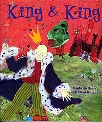
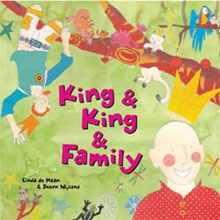

| В один "прекрасный день" ваш ребенок принесет из школьной библиотеки
книгу, содержание которой приведет вас в ужас, как это уже случилось в приведенной
ниже статье. Протестовать вы не сможете, потому что закон будет не на вашей стороне. Почему так случилось или почему так будет? Один из ответов: виной этому ваша пассивность в церкви и фактическое нарушение завета Христа о евангелизации мира. Проснитесь! День другой настал! NP |
Книгу о нежной любви двух принцев выдали ученице первого класса в школьной библиотеке, сообщает Лента. Родители девочки, ознакомившись с содержанием сказки, пришли в ужас. В сказке "Король плюс король" Линды ле Хаан и Стерна Нийланда рассказывается о том, как в одном сказочном королевстве родители подыскивали принцу подходящую жену. Принц Берти отверг множество претенденток. Последней ко двору прибыла некая принцесса вместе со своим братом Ли. Как только принц Берти увидел принца Ли, он понял, что нашел своего возлюбленного. Книжка заканчивается свадьбой юношей.
В издательстве Tricycle Press не видят ничего особенного в таком сюжете. Более того, то же издательсвто выпустило в свет продолжение сказки о принцах под названием "Король плюс король и семья". На сайте издательства книга рекомендована для чтения детям от шести лет. "Книгу оценивали самые авторитетные специалисты, и ни один из них не счел ее неподобающей для детей," - заявил глава издательства. - В нашей стране существуют различные типы семей. Дети из нестандартных семей и их друзья заслуживают позитивного освещения подобных отношений."
Позицию издательства поддержало и руководство школы. "То, что неприемлемо для одних семей, для других является абсолютно нормальным", - заявила директор школы и посоветовала родителям подать письменную жалобу в специальный школьный комитет, отбирающий книги для учеников.
|  | Linda De Haan and Stern Nijland $14.95 (CAN $22.50) ISBN: 1-58246-113-9 32 pages | size: 9 7/8 x 9 7/8 inches New Title | Hardcover (cloth) Full-color illustrations Ages 6 and up Tricycle Press |
Мар 20, 2004 | 10:43 pm